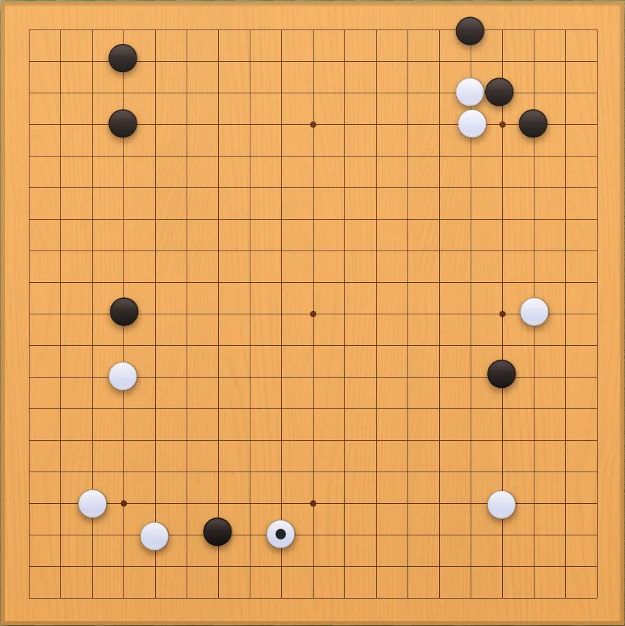
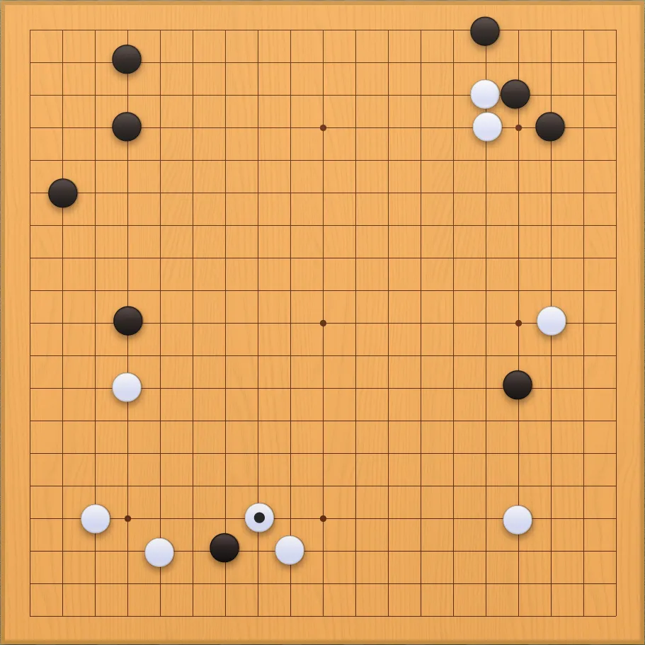
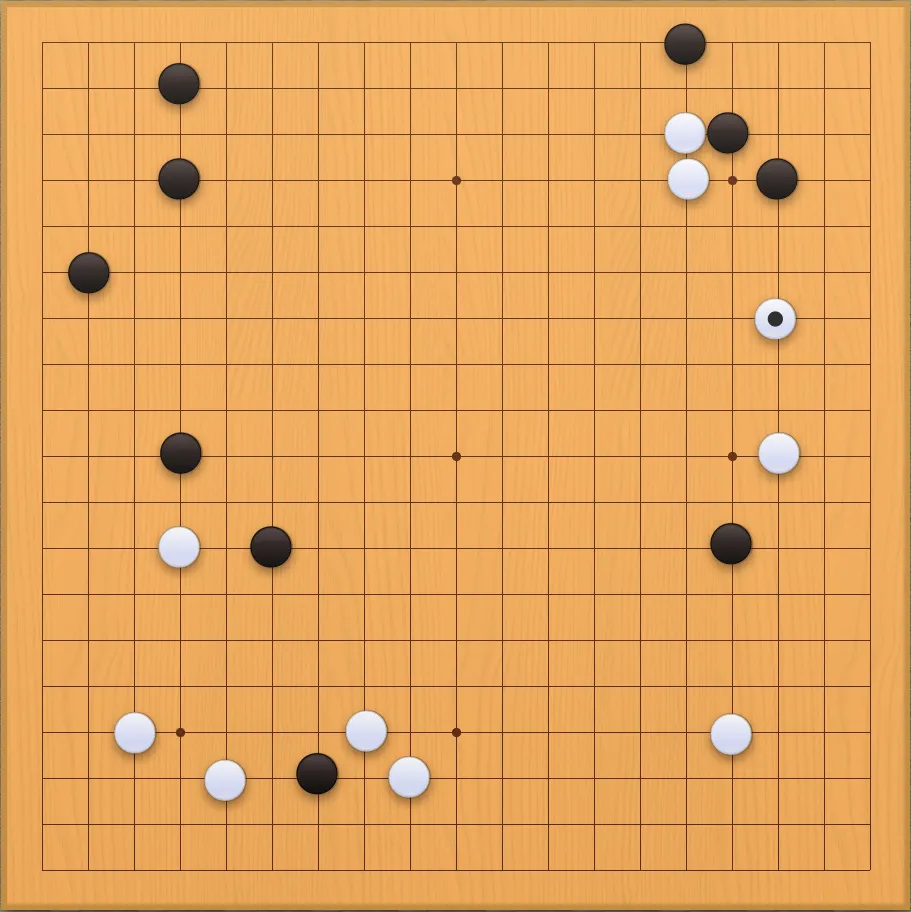
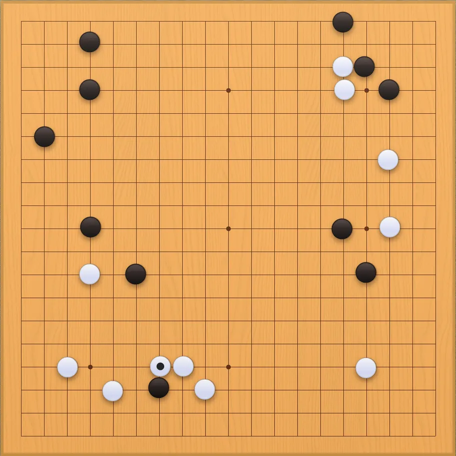
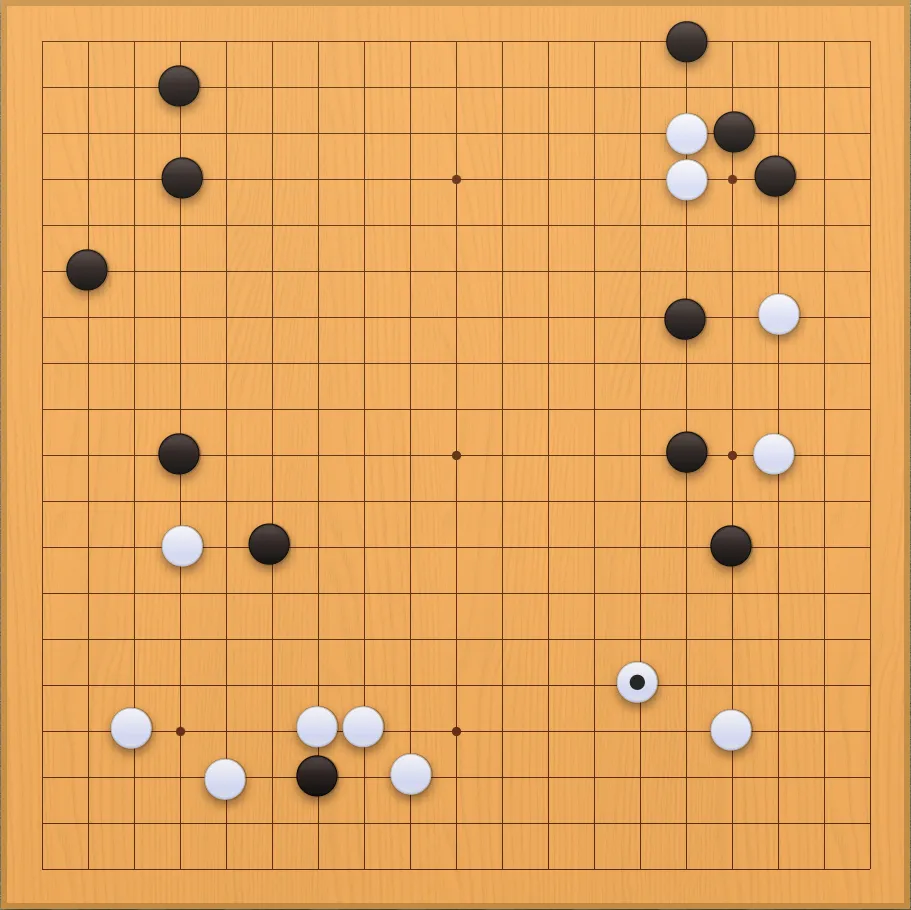
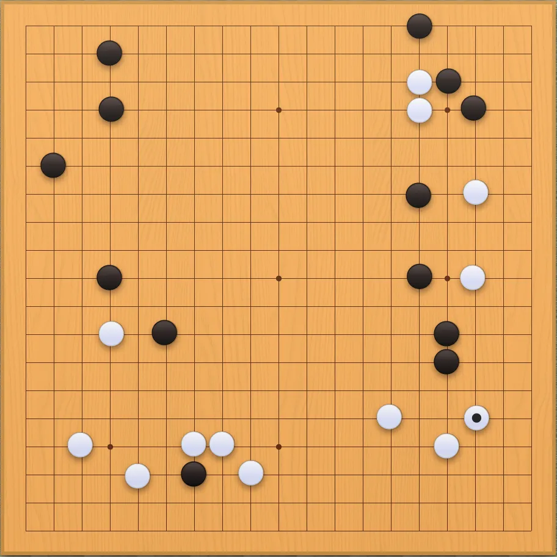
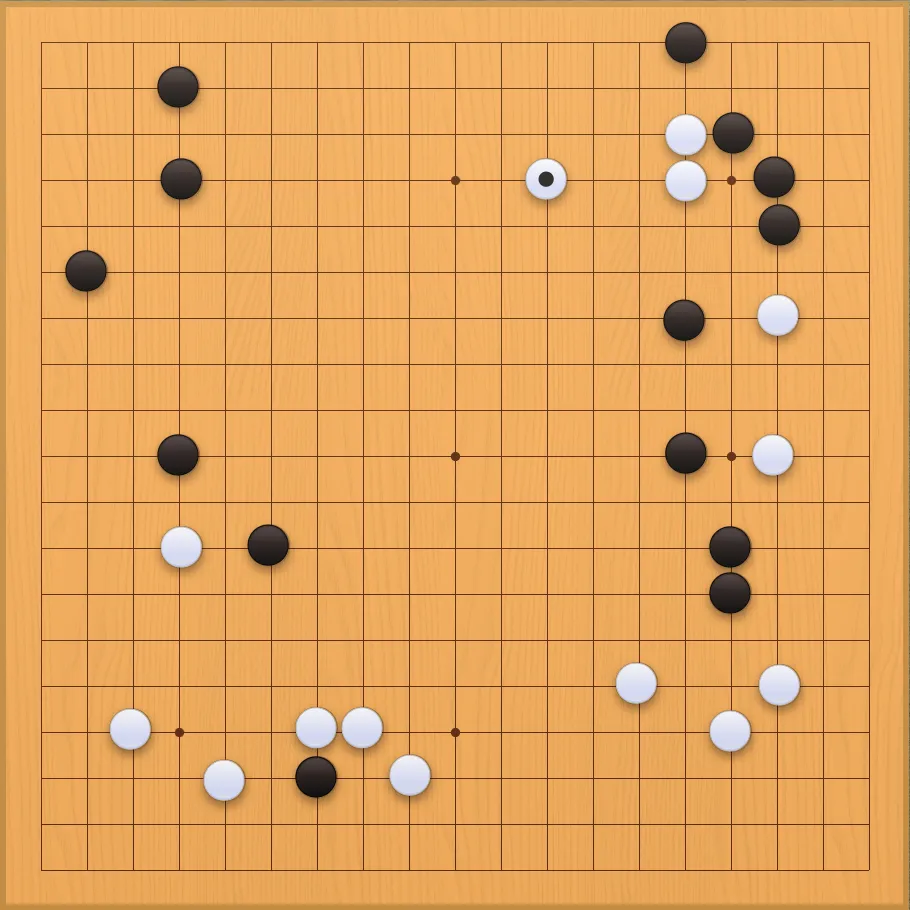

GO - Contra la máquina | Semana 2
Esta ha sido una semana algo ajetreada y no he tenido mucho tiempo para "estudiar" un poco el go. Así que supongo que mis jugadas seguirán pareciendo las de un loco por algunos días más.
De todas maneras, ya tengo una lista de recursos preparada para la próxima semana.
En esta fase inicial de la partida he seguido la misma estrategia que la semana pasada. Simplemente he intentado hacerme con el control de las esquinas para más tarde hacer lo propio con los laterales.
En las dos esquinas superiores parece que tengo el control. Pienso de esa manera porque cubro la parte del borde del tablero, lo que a mi parecer es una ventaja.
En cambio las dos esquinas inferiores están en posesión absoluta del blanco.
Por otra parte, todo lo que el blanco consigue "del lado del tablero", como sería el lateral derecho, yo lo estoy intentando "rodear".
Creo que para la próxima semana ya veré algunas capturas y el juego se volverá menos "instintivo" y más "estratégico".
¡Hasta la semana que viene!







EnRoot